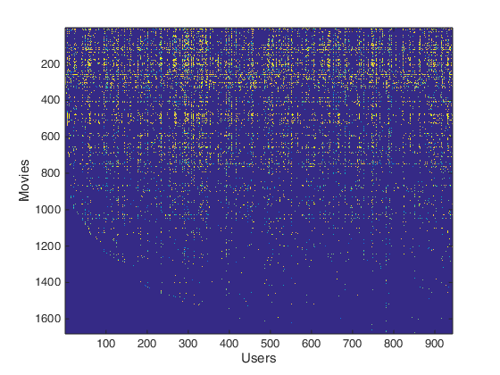

Machine Learning Online Class
Exercise 8 | Anomaly Detection and Collaborative Filtering
Instructions
------------
This file contains code that helps you get started on the
exercise. You will need to complete the following functions:
estimateGaussian.m
selectThreshold.m
cofiCostFunc.m
For this exercise, you will not need to change any code in this file,
or any other files other than those mentioned above.
Contents
=============== Part 1: Loading movie ratings dataset ================
You will start by loading the movie ratings dataset to understand the
structure of the data.
fprintf('Loading movie ratings dataset.\n\n');
load ('ex8_movies.mat');
fprintf('Average rating for movie 1 (Toy Story): %f / 5\n\n', ...
mean(Y(1, R(1, :))));
imagesc(Y);
ylabel('Movies');
xlabel('Users');
fprintf('\nProgram paused. Press enter to continue.\n');
Loading movie ratings dataset.
Average rating for movie 1 (Toy Story): 3.878319 / 5
Program paused. Press enter to continue.

============ Part 2: Collaborative Filtering Cost Function ===========
You will now implement the cost function for collaborative filtering.
To help you debug your cost function, we have included set of weights
that we trained on that. Specifically, you should complete the code in
cofiCostFunc.m to return J.
load ('ex8_movieParams.mat');
num_users = 4; num_movies = 5; num_features = 3;
X = X(1:num_movies, 1:num_features);
Theta = Theta(1:num_users, 1:num_features);
Y = Y(1:num_movies, 1:num_users);
R = R(1:num_movies, 1:num_users);
J = cofiCostFunc([X(:) ; Theta(:)], Y, R, num_users, num_movies, ...
num_features, 0);
fprintf(['Cost at loaded parameters: %f '...
'\n(this value should be about 22.22)\n'], J);
fprintf('\nProgram paused. Press enter to continue.\n');
Cost at loaded parameters: 22.224604
(this value should be about 22.22)
Program paused. Press enter to continue.
============== Part 3: Collaborative Filtering Gradient ==============
Once your cost function matches up with ours, you should now implement
the collaborative filtering gradient function. Specifically, you should
complete the code in cofiCostFunc.m to return the grad argument.
fprintf('\nChecking Gradients (without regularization) ... \n');
checkCostFunction;
fprintf('\nProgram paused. Press enter to continue.\n');
Checking Gradients (without regularization) ...
0.1497 0.1497
0.3980 0.3980
0.2560 0.2560
1.3784 1.3784
2.6491 2.6491
-0.4252 -0.4252
-0.2735 -0.2735
-1.6385 -1.6385
0.5596 0.5596
0.7102 0.7102
0.4569 0.4569
0.3224 0.3224
0.1981 0.1981
0 0
0.1366 0.1366
-0.0292 -0.0292
-0.0305 -0.0305
-1.3475 -1.3475
0 0
-0.8140 -0.8140
-0.6331 -0.6331
-0.6624 -0.6624
0.3746 0.3746
0 0
2.2077 2.2077
-0.6173 -0.6173
-0.6459 -0.6459
The above two columns you get should be very similar.
(Left-Your Numerical Gradient, Right-Analytical Gradient)
If your cost function implementation is correct, then
the relative difference will be small (less than 1e-9).
Relative Difference: 6.15976e-13
Program paused. Press enter to continue.
========= Part 4: Collaborative Filtering Cost Regularization ========
Now, you should implement regularization for the cost function for
collaborative filtering. You can implement it by adding the cost of
regularization to the original cost computation.
J = cofiCostFunc([X(:) ; Theta(:)], Y, R, num_users, num_movies, ...
num_features, 1.5);
fprintf(['Cost at loaded parameters (lambda = 1.5): %f '...
'\n(this value should be about 31.34)\n'], J);
fprintf('\nProgram paused. Press enter to continue.\n');
Cost at loaded parameters (lambda = 1.5): 31.344056
(this value should be about 31.34)
Program paused. Press enter to continue.
======= Part 5: Collaborative Filtering Gradient Regularization ======
Once your cost matches up with ours, you should proceed to implement
regularization for the gradient.
fprintf('\nChecking Gradients (with regularization) ... \n');
checkCostFunction(1.5);
fprintf('\nProgram paused. Press enter to continue.\n');
Checking Gradients (with regularization) ...
-2.0435 -2.0435
3.1854 3.1854
-0.7130 -0.7130
-0.7770 -0.7770
-0.9691 -0.9691
1.0910 1.0910
1.0676 1.0676
-0.1877 -0.1877
-7.8351 -7.8351
10.2481 10.2481
-6.5521 -6.5521
-4.7644 -4.7644
0.3154 0.3154
-2.7651 -2.7651
1.3567 1.3567
-0.3049 -0.3049
2.0216 2.0216
1.8745 1.8745
1.2880 1.2880
-0.0718 -0.0718
-0.9933 -0.9933
0.6534 0.6534
1.1397 1.1397
-0.4658 -0.4658
0.3358 0.3358
12.1469 12.1469
-0.6123 -0.6123
The above two columns you get should be very similar.
(Left-Your Numerical Gradient, Right-Analytical Gradient)
If your cost function implementation is correct, then
the relative difference will be small (less than 1e-9).
Relative Difference: 1.95438e-12
Program paused. Press enter to continue.
============== Part 6: Entering ratings for a new user ===============
Before we will train the collaborative filtering model, we will first
add ratings that correspond to a new user that we just observed. This
part of the code will also allow you to put in your own ratings for the
movies in our dataset!
movieList = loadMovieList();
my_ratings = zeros(1682, 1);
my_ratings(1) = 4;
my_ratings(98) = 2;
my_ratings(7) = 3;
my_ratings(12)= 5;
my_ratings(54) = 4;
my_ratings(64)= 5;
my_ratings(66)= 3;
my_ratings(69) = 5;
my_ratings(183) = 4;
my_ratings(226) = 5;
my_ratings(355)= 5;
fprintf('\n\nNew user ratings:\n');
for i = 1:length(my_ratings)
if my_ratings(i) > 0
fprintf('Rated %d for %s\n', my_ratings(i), ...
movieList{i});
end
end
fprintf('\nProgram paused. Press enter to continue.\n');
New user ratings:
Rated 4 for Toy Story (1995)
Rated 3 for Twelve Monkeys (1995)
Rated 5 for Usual Suspects, The (1995)
Rated 4 for Outbreak (1995)
Rated 5 for Shawshank Redemption, The (1994)
Rated 3 for While You Were Sleeping (1995)
Rated 5 for Forrest Gump (1994)
Rated 2 for Silence of the Lambs, The (1991)
Rated 4 for Alien (1979)
Rated 5 for Die Hard 2 (1990)
Rated 5 for Sphere (1998)
Program paused. Press enter to continue.
================== Part 7: Learning Movie Ratings ====================
Now, you will train the collaborative filtering model on a movie rating
dataset of 1682 movies and 943 users
fprintf('\nTraining collaborative filtering...\n');
load('ex8_movies.mat');
Y = [my_ratings Y];
R = [(my_ratings ~= 0) R];
[Ynorm, Ymean] = normalizeRatings(Y, R);
num_users = size(Y, 2);
num_movies = size(Y, 1);
num_features = 10;
X = randn(num_movies, num_features);
Theta = randn(num_users, num_features);
initial_parameters = [X(:); Theta(:)];
options = optimset('GradObj', 'on', 'MaxIter', 100);
lambda = 10;
theta = fmincg (@(t)(cofiCostFunc(t, Ynorm, R, num_users, num_movies, ...
num_features, lambda)), ...
initial_parameters, options);
X = reshape(theta(1:num_movies*num_features), num_movies, num_features);
Theta = reshape(theta(num_movies*num_features+1:end), ...
num_users, num_features);
fprintf('Recommender system learning completed.\n');
fprintf('\nProgram paused. Press enter to continue.\n');
Training collaborative filtering...
Iteration 1 | Cost: 3.177341e+05Iteration 2 | Cost: 1.353856e+05Iteration 3 | Cost: 1.045499e+05Iteration 4 | Cost: 8.868582e+04Iteration 5 | Cost: 7.388938e+04Iteration 6 | Cost: 6.193759e+04Iteration 7 | Cost: 5.402144e+04Iteration 8 | Cost: 4.993831e+04Iteration 9 | Cost: 4.605635e+04Iteration 10 | Cost: 4.356832e+04Iteration 11 | Cost: 4.224008e+04Iteration 12 | Cost: 4.136746e+04Iteration 13 | Cost: 4.100141e+04Iteration 14 | Cost: 4.055477e+04Iteration 15 | Cost: 4.021065e+04Iteration 16 | Cost: 4.002002e+04Iteration 17 | Cost: 3.977341e+04Iteration 18 | Cost: 3.966980e+04Iteration 19 | Cost: 3.954646e+04Iteration 20 | Cost: 3.946797e+04Iteration 21 | Cost: 3.941838e+04Iteration 22 | Cost: 3.935137e+04Iteration 23 | Cost: 3.932346e+04Iteration 24 | Cost: 3.930529e+04Iteration 25 | Cost: 3.927746e+04Iteration 26 | Cost: 3.924101e+04Iteration 27 | Cost: 3.921977e+04Iteration 28 | Cost: 3.920660e+04Iteration 29 | Cost: 3.919232e+04Iteration 30 | Cost: 3.917432e+04Iteration 31 | Cost: 3.916047e+04Iteration 32 | Cost: 3.913416e+04Iteration 33 | Cost: 3.910778e+04Iteration 34 | Cost: 3.909113e+04Iteration 35 | Cost: 3.908391e+04Iteration 36 | Cost: 3.907527e+04Iteration 37 | Cost: 3.906892e+04Iteration 38 | Cost: 3.906314e+04Iteration 39 | Cost: 3.905349e+04Iteration 40 | Cost: 3.904891e+04Iteration 41 | Cost: 3.904621e+04Iteration 42 | Cost: 3.904317e+04Iteration 43 | Cost: 3.903952e+04Iteration 44 | Cost: 3.903665e+04Iteration 45 | Cost: 3.903278e+04Iteration 46 | Cost: 3.902923e+04Iteration 47 | Cost: 3.902744e+04Iteration 48 | Cost: 3.902681e+04Iteration 49 | Cost: 3.902424e+04Iteration 50 | Cost: 3.902284e+04Iteration 51 | Cost: 3.902237e+04Iteration 52 | Cost: 3.902121e+04Iteration 53 | Cost: 3.901959e+04Iteration 54 | Cost: 3.901798e+04Iteration 55 | Cost: 3.901672e+04Iteration 56 | Cost: 3.901503e+04Iteration 57 | Cost: 3.901253e+04Iteration 58 | Cost: 3.901017e+04Iteration 59 | Cost: 3.900762e+04Iteration 60 | Cost: 3.900532e+04Iteration 61 | Cost: 3.900436e+04Iteration 62 | Cost: 3.900351e+04Iteration 63 | Cost: 3.900279e+04Iteration 64 | Cost: 3.900176e+04Iteration 65 | Cost: 3.900057e+04Iteration 66 | Cost: 3.900019e+04Iteration 67 | Cost: 3.899986e+04Iteration 68 | Cost: 3.899931e+04Iteration 69 | Cost: 3.899882e+04Iteration 70 | Cost: 3.899859e+04Iteration 71 | Cost: 3.899832e+04Iteration 72 | Cost: 3.899801e+04Iteration 73 | Cost: 3.899770e+04Iteration 74 | Cost: 3.899737e+04Iteration 75 | Cost: 3.899656e+04Iteration 76 | Cost: 3.899557e+04Iteration 77 | Cost: 3.899479e+04Iteration 78 | Cost: 3.899391e+04Iteration 79 | Cost: 3.899352e+04Iteration 80 | Cost: 3.899350e+04Iteration 81 | Cost: 3.899293e+04Iteration 82 | Cost: 3.899272e+04Iteration 83 | Cost: 3.899240e+04Iteration 84 | Cost: 3.899229e+04Iteration 85 | Cost: 3.899212e+04Iteration 86 | Cost: 3.899196e+04Iteration 87 | Cost: 3.899149e+04Iteration 88 | Cost: 3.898998e+04Iteration 89 | Cost: 3.898641e+04Iteration 90 | Cost: 3.898602e+04Iteration 91 | Cost: 3.898462e+04Iteration 92 | Cost: 3.898356e+04Iteration 93 | Cost: 3.898313e+04Iteration 94 | Cost: 3.898267e+04Iteration 95 | Cost: 3.898239e+04Iteration 96 | Cost: 3.898180e+04Iteration 97 | Cost: 3.898124e+04Iteration 98 | Cost: 3.898006e+04Iteration 99 | Cost: 3.897852e+04Iteration 100 | Cost: 3.897735e+04
Recommender system learning completed.
Program paused. Press enter to continue.
================== Part 8: Recommendation for you ====================
After training the model, you can now make recommendations by computing
the predictions matrix.
p = X * Theta';
my_predictions = p(:,1) + Ymean;
movieList = loadMovieList();
[r, ix] = sort(my_predictions, 'descend');
fprintf('\nTop recommendations for you:\n');
for i=1:100
j = ix(i);
fprintf('Predicting rating %.1f for movie %s\n', my_predictions(j), ...
movieList{j});
end
fprintf('\n\nOriginal ratings provided:\n');
for i = 1:length(my_ratings)
if my_ratings(i) > 0
fprintf('Rated %d for %s\n', my_ratings(i), ...
movieList{i});
end
end
Top recommendations for you:
Predicting rating 5.0 for movie Aiqing wansui (1994)
Predicting rating 5.0 for movie Prefontaine (1997)
Predicting rating 5.0 for movie Marlene Dietrich: Shadow and Light (1996)
Predicting rating 5.0 for movie They Made Me a Criminal (1939)
Predicting rating 5.0 for movie Saint of Fort Washington, The (1993)
Predicting rating 5.0 for movie Someone Else's America (1995)
Predicting rating 5.0 for movie Entertaining Angels: The Dorothy Day Story (1996)
Predicting rating 5.0 for movie Star Kid (1997)
Predicting rating 5.0 for movie Santa with Muscles (1996)
Predicting rating 5.0 for movie Great Day in Harlem, A (1994)
Predicting rating 4.6 for movie Pather Panchali (1955)
Predicting rating 4.5 for movie Wrong Trousers, The (1993)
Predicting rating 4.5 for movie Star Wars (1977)
Predicting rating 4.5 for movie Maya Lin: A Strong Clear Vision (1994)
Predicting rating 4.5 for movie Shawshank Redemption, The (1994)
Predicting rating 4.5 for movie Anna (1996)
Predicting rating 4.5 for movie Everest (1998)
Predicting rating 4.5 for movie Some Mother's Son (1996)
Predicting rating 4.5 for movie Titanic (1997)
Predicting rating 4.5 for movie Close Shave, A (1995)
Predicting rating 4.4 for movie Raiders of the Lost Ark (1981)
Predicting rating 4.4 for movie Schindler's List (1993)
Predicting rating 4.4 for movie Wallace & Gromit: The Best of Aardman Animation (1996)
Predicting rating 4.4 for movie Casablanca (1942)
Predicting rating 4.4 for movie Usual Suspects, The (1995)
Predicting rating 4.4 for movie Empire Strikes Back, The (1980)
Predicting rating 4.4 for movie Some Folks Call It a Sling Blade (1993)
Predicting rating 4.3 for movie Third Man, The (1949)
Predicting rating 4.3 for movie Bitter Sugar (Azucar Amargo) (1996)
Predicting rating 4.3 for movie Letter From Death Row, A (1998)
Predicting rating 4.3 for movie Citizen Kane (1941)
Predicting rating 4.3 for movie Rear Window (1954)
Predicting rating 4.3 for movie Good Will Hunting (1997)
Predicting rating 4.3 for movie Braveheart (1995)
Predicting rating 4.3 for movie As Good As It Gets (1997)
Predicting rating 4.3 for movie Terminator 2: Judgment Day (1991)
Predicting rating 4.3 for movie Shall We Dance? (1996)
Predicting rating 4.3 for movie 12 Angry Men (1957)
Predicting rating 4.3 for movie Return of the Jedi (1983)
Predicting rating 4.3 for movie Paths of Glory (1957)
Predicting rating 4.3 for movie Secrets & Lies (1996)
Predicting rating 4.3 for movie Affair to Remember, An (1957)
Predicting rating 4.3 for movie Crossfire (1947)
Predicting rating 4.3 for movie Godfather, The (1972)
Predicting rating 4.2 for movie Innocents, The (1961)
Predicting rating 4.2 for movie Vertigo (1958)
Predicting rating 4.2 for movie Godfather: Part II, The (1974)
Predicting rating 4.2 for movie Kaspar Hauser (1993)
Predicting rating 4.2 for movie Blade Runner (1982)
Predicting rating 4.2 for movie North by Northwest (1959)
Predicting rating 4.2 for movie Lawrence of Arabia (1962)
Predicting rating 4.2 for movie Bridge on the River Kwai, The (1957)
Predicting rating 4.2 for movie Silence of the Lambs, The (1991)
Predicting rating 4.2 for movie Sling Blade (1996)
Predicting rating 4.2 for movie Stonewall (1995)
Predicting rating 4.2 for movie One Flew Over the Cuckoo's Nest (1975)
Predicting rating 4.2 for movie Manchurian Candidate, The (1962)
Predicting rating 4.2 for movie Maltese Falcon, The (1941)
Predicting rating 4.2 for movie African Queen, The (1951)
Predicting rating 4.2 for movie Fugitive, The (1993)
Predicting rating 4.2 for movie Alien (1979)
Predicting rating 4.2 for movie Manon of the Spring (Manon des sources) (1986)
Predicting rating 4.2 for movie Faust (1994)
Predicting rating 4.2 for movie Great Escape, The (1963)
Predicting rating 4.2 for movie Princess Bride, The (1987)
Predicting rating 4.2 for movie To Kill a Mockingbird (1962)
Predicting rating 4.2 for movie Sunset Blvd. (1950)
Predicting rating 4.2 for movie Grand Day Out, A (1992)
Predicting rating 4.2 for movie Indiana Jones and the Last Crusade (1989)
Predicting rating 4.1 for movie A Chef in Love (1996)
Predicting rating 4.1 for movie L.A. Confidential (1997)
Predicting rating 4.1 for movie Cinema Paradiso (1988)
Predicting rating 4.1 for movie Killing Fields, The (1984)
Predicting rating 4.1 for movie Hoop Dreams (1994)
Predicting rating 4.1 for movie Terminator, The (1984)
Predicting rating 4.1 for movie Apt Pupil (1998)
Predicting rating 4.1 for movie Henry V (1989)
Predicting rating 4.1 for movie Boot, Das (1981)
Predicting rating 4.1 for movie Waiting for Guffman (1996)
Predicting rating 4.1 for movie Raise the Red Lantern (1991)
Predicting rating 4.1 for movie Fargo (1996)
Predicting rating 4.1 for movie Fresh (1994)
Predicting rating 4.1 for movie Notorious (1946)
Predicting rating 4.1 for movie Aliens (1986)
Predicting rating 4.1 for movie Horseman on the Roof, The (Hussard sur le toit, Le) (1995)
Predicting rating 4.1 for movie Amadeus (1984)
Predicting rating 4.1 for movie Dr. Strangelove or: How I Learned to Stop Worrying and Love the Bomb (1963)
Predicting rating 4.1 for movie Duck Soup (1933)
Predicting rating 4.1 for movie Once Were Warriors (1994)
Predicting rating 4.1 for movie Philadelphia Story, The (1940)
Predicting rating 4.1 for movie It's a Wonderful Life (1946)
Predicting rating 4.1 for movie Treasure of the Sierra Madre, The (1948)
Predicting rating 4.1 for movie High Noon (1952)
Predicting rating 4.1 for movie Thin Man, The (1934)
Predicting rating 4.1 for movie Roman Holiday (1953)
Predicting rating 4.1 for movie Sting, The (1973)
Predicting rating 4.1 for movie Glory (1989)
Predicting rating 4.1 for movie Toy Story (1995)
Predicting rating 4.1 for movie Ran (1985)
Predicting rating 4.1 for movie Jean de Florette (1986)
Original ratings provided:
Rated 4 for Toy Story (1995)
Rated 3 for Twelve Monkeys (1995)
Rated 5 for Usual Suspects, The (1995)
Rated 4 for Outbreak (1995)
Rated 5 for Shawshank Redemption, The (1994)
Rated 3 for While You Were Sleeping (1995)
Rated 5 for Forrest Gump (1994)
Rated 2 for Silence of the Lambs, The (1991)
Rated 4 for Alien (1979)
Rated 5 for Die Hard 2 (1990)
Rated 5 for Sphere (1998)